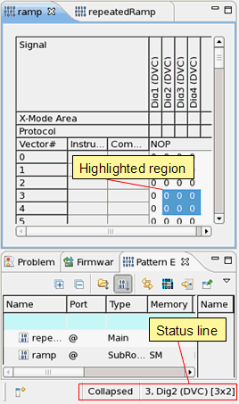

Editor status line
The status line is at the bottom of the SmarTest main window.

For the current editor, in the example above it is the Pattern Editor, the status line provides the following information:
|
Meaning |
|---|---|
Referenced pattern |
Not shown here - for port burst pages of Multiport Burst Editor in expanded mode only: the referenced pattern. To go to the pattern, double-click the status line entry. |
|
|
Collapsed / Expanded |
Display mode of the pattern editor (collapsed or expanded) |
3 |
If one cell is selected: tester vector number of the highlighted cell - or - If a region is selected: tester vector number of the left upper cell of the region |
Dig2 (DVC) |
If one cell is selected: signal name - or - If a region is selected: signal name of he left upper cell of the region plus the signal format: here (DVC) for the Device Cycle signal format. |
[3x2] |
Size of the highlighted cell region, here 3x2 cells (only visible if a region is selected). This information is useful when you copy and paste a region of cells: you can easily select the target region without counting the cells. |
Functional changes
- Introduced before SmarTest 6.3.2
- SmarTest 6.5.3: Status line indicates the signal format.